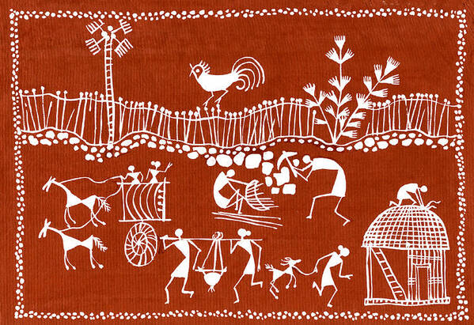
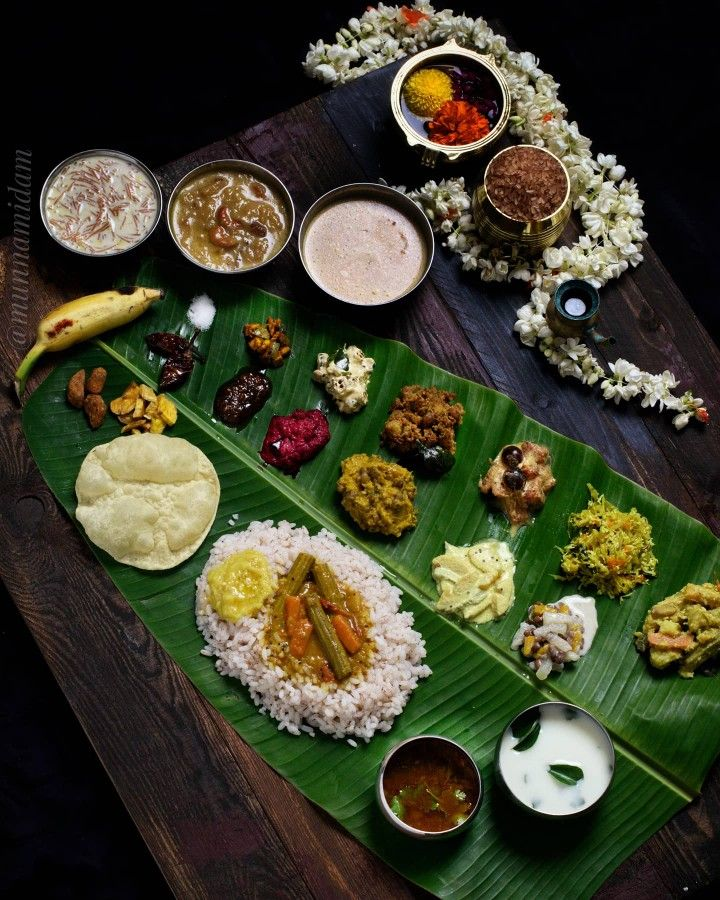

Dance
Bharatanatyam, Kathak, Odissi, and folk forms encode devotion, rhythm, costume, and storytelling.

Living Heritage
Heritage is not only preserved in monuments. It moves through hands, voices, festivals, recipes, looms, and stages.
Hover to reveal
Bharatanatyam, Kathak, Odissi, and folk forms encode devotion, rhythm, costume, and storytelling.
Warli art, blue pottery, bronze casting, and handloom traditions carry regional identity through technique.

Regional cuisines preserve climate knowledge, trade routes, rituals, and family memory.
Festivals turn streets and homes into shared cultural theaters of music, light, food, and devotion.
Explore living heritage
Handloom traditions carry regional climate, local material knowledge, family labour, and identity through patterns, dyes, and weaving techniques.